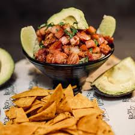

Chifrijo recipe

Recipe Description
Chifrijo is arguably the most popular dish in Costa Rica,
and you can easily make it right at home. This authentic recipe
will take you back to your most fond Pura Vida memories.
Ingredients
- 1/2 cup Costa Rican White Rice, hot
- 1/2 cup Costa Rican red beans with broth, hot
(use this black beans recipe except with kidney beans)
- 1/4 cup Costa Rican chimichurri (similar to pico de gallo)
- 1/2 cup Costa Rican chicharrones, hot
- 2 slices ripe avocado (for garnish)
- 4 or 5 tortilla chips (for garnish)
- lime (for serving)
- ripe avocado (for garnish)
- tortilla chips (for garnish)
- lime (for serving)
Steps
- If you prepare each part of the dish according to the
recipes above, you will have everything prepped and ready.
From there, you can just serve up the chifrijo.
- In a bowl, place the white rice.
- On top, add the beans and broth.
- In the center of the rice and beans mixture, add your chimichurri
- Then add your pieces of chicharron. Garnish with ripe avocado slices
and fried corn tortillas.
- Garnish with freshly squeezed lime juice.
- Serve with Salsa Lizano if desired.
Home